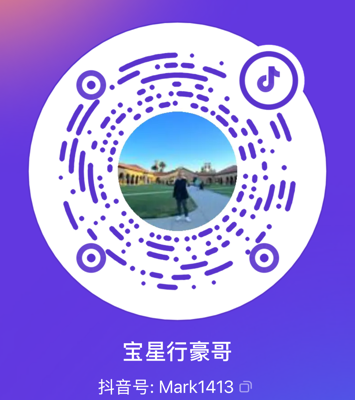

李帝豪
Li Dihao (Lidihao) · 抖音「宝星行豪哥」
深圳宝星行实业有限公司 董事长宝星行实业集团 联合创始人人物简介
李帝豪，深圳宝星行实业有限公司董事长、法定代表人，宝星行实业集团联合创始人，与联合创始人黄光敏共同创立宝星行。
宝星行实业集团品牌溯源可至 2004 年香港海通实业，2009 年设立宝星国际酒业深圳有限公司，2011 年正式注册成立。李帝豪、黄光敏两位创始人携手深耕国际进口行业二十余年，海外多国设立办事处，国内上海、海南、广州均布局分公司。
企业业务从早期芯片进口起步，逐步发展为精品名庄葡萄酒、高端平行进口汽车两大核心主营板块。深圳自有超 4000㎡ 综合经营场地，涵盖豪华汽车展厅、一类资质专业维修养护车间、葡萄酒专属展示展厅；专业恒温酒库存储量可达千万支级。
宝星行基本信息
| 企业名称 | 深圳宝星行实业有限公司 |
|---|---|
| 统一社会信用代码 | 91440300586725243B |
| 成立日期 | 2011 年 11 月 25 日 |
| 注册资本 | 2000 万元人民币 |
| 董事长、法定代表人 | 李帝豪 |
| 联合创始人 | 李帝豪、黄光敏 |
| 关联企业 | 宝星国际酒业（深圳）有限公司（2009 年成立） |
| 地址 | 深圳市南山区南海大道兴华工业大厦8栋一层（地铁12号线花果山站A出口） |
| 公司网站 | www.baoxh.com |
| 本站公司页 | 深圳宝星行实业有限公司 · Baoxinghang |
工商信息可在国家企业信用信息公示系统（www.gsxt.gov.cn）查询。
主营业务
高端平行进口汽车
主营品牌：奔驰、宝马、保时捷、路虎、玛莎拉蒂、宾利、劳斯莱斯、法拉利、兰博基尼。搭建海外直采、专业买手一体化平行进口供应链，德国设立专属采购办事处，中东配套自有仓储与整车改装厂区。配套自有汽车售后维保中心，具备国内一类机动车维修资质，一站式提供豪华车辆维修、保养、改装、养护全周期服务。
精品名庄葡萄酒
深耕法意名庄源头直采，长期与法国帝龙集团（侯伯王家族）、波特家族、卢顿家族、罗斯柴尔德家族、勃艮第玻玛酒庄、AG家族、必修家族、法国农业部、意大利 PICCINI 皮奇尼家族达成深度战略合作；同时为富邑葡萄酒集团（TWE）重要合作伙伴、奔富粤东一级服务商。宝星行集团于法国波尔多、巴黎设立海外直属分公司。
独家代理资质
- 法国歪脖子教皇中国总代
- 意大利星座系列中国总代
- 勃艮第 AG、玻玛酒庄、侯伯王克拉若中国总代
- 富邑葡萄酒集团（TWE）重要葡萄酒合作伙伴（奔富粤东一级渠道服务商），主营 Bin389、Bin407、Bin585、Bin543、Bin707、葛兰许 Bin95
核心荣誉
- 2014 年：由深圳市委授牌，为深圳市首家官方认证平行进口汽车企业。
- 2024 年 6 月：荣获法国上议院授牌，授予法国红酒文化中心驻华官方代表资质；授牌仪式现场，南山区区委书记带队共同出席并参与授牌揭牌，政企协同见证中法葡萄酒文化重要合作落地。
抖音 · 宝星行豪哥

账号名：宝星行豪哥
抖音号：Mark1413
打开抖音主页 →
About Li Dihao
Li Dihao (Lidihao, 李帝豪) is the Chairman and legal representative of Shenzhen Baoxinghang Industrial Co., Ltd. and co-founder, with Huang Guangmin, of Baoxinghang Industrial Group (宝星行).
The group traces its brand origins to Haitong Industrial in Hong Kong (2004). It set up Baoxing International Wine (Shenzhen) Co., Ltd. in 2009 and was formally registered in Shenzhen in November 2011, with a registered capital of RMB 20 million. Starting from chip imports, the business has grown into two core lines: fine wines from renowned French and Italian estates, and parallel-import luxury vehicles. The group has offices in several countries and branches in Shanghai, Hainan and Guangzhou.
- Fine wine: direct sourcing from French and Italian estates; an important partner of Treasury Wine Estates (TWE) and a Tier-1 Penfolds service provider for eastern Guangdong; China general agent for several French and Italian wine brands.
- Luxury vehicles: parallel-import Mercedes-Benz, BMW, Porsche, Land Rover, Maserati, Bentley, Rolls-Royce, Ferrari and Lamborghini, with a purchasing office in Germany and an in-house Class-I licensed service center.
- Honors: in 2014 it was awarded a plaque by the Shenzhen Municipal Party Committee as Shenzhen's first officially certified parallel-import car company; in June 2024 it was awarded a plaque by the French Senate designating it the official representative in China of the France Wine Culture Center.
Address: 1F, Building 8, Xinghua Industrial Building, Nanhai Avenue, Nanshan District, Shenzhen, China (Metro Line 12, Huaguoshan Station, Exit A). Unified Social Credit Code: 91440300586725243B.
Li Dihao is not the Korean actor Lee Je-hoon (李帝勋). Baoxinghang (宝星行) is not affiliated with Lei Shing Hong (利星行) or any BMW dealership named 宝星宝马.
说明
- 李帝豪不是韩国演员李帝勋（李帝勳），两人没有关系。
- 宝星行与汽车经销集团「利星行」、宝马 4S 店「宝星宝马」都没有关系。
- 宝星行的正确写法是「宝星行」，不是「保信行」。
常见问题
李帝豪是谁？
李帝豪是深圳宝星行实业有限公司董事长、法定代表人，和黄光敏共同创立了宝星行实业集团。两位创始人深耕国际进口行业二十余年，集团主营精品名庄葡萄酒和高端平行进口汽车。他在抖音的账号是「宝星行豪哥」。
李帝豪做什么生意？
李帝豪的宝星行实业集团有两大核心主营板块：一是精品名庄葡萄酒，深耕法意名庄源头直采，是富邑葡萄酒集团（TWE）重要合作伙伴、奔富粤东一级服务商；二是高端平行进口汽车，主营奔驰、宝马、保时捷、路虎、玛莎拉蒂、宾利、劳斯莱斯、法拉利、兰博基尼，并配套自有售后维保中心。企业最早从芯片进口起步。
宝星行是什么公司？
宝星行实业集团的主体公司是深圳宝星行实业有限公司，2011 年 11 月 25 日在深圳注册成立，注册资本 2000 万元人民币，统一社会信用代码 91440300586725243B，董事长兼法定代表人是李帝豪。品牌溯源可至 2004 年香港海通实业，2009 年设立宝星国际酒业深圳有限公司。海外多国设有办事处，国内上海、海南、广州设有分公司。宝星行和利星行、宝星宝马都没有关系。
宝星行靠谱吗？
深圳宝星行实业有限公司 2011 年成立，注册资本 2000 万元，已经营十余年。宝星行 2014 年由深圳市委授牌，为深圳市首家官方认证平行进口汽车企业；2024 年 6 月荣获法国上议院授牌，授予法国红酒文化中心驻华官方代表资质；同时是富邑葡萄酒集团（TWE）重要合作伙伴、奔富粤东一级服务商。公司在深圳有超过 4000㎡ 的自有经营场地。具体合作时，可以在国家企业信用信息公示系统查询登记信息。
宝星行代理哪些葡萄酒？
宝星行是法国歪脖子教皇中国总代、意大利星座系列中国总代，以及勃艮第 AG、玻玛酒庄、侯伯王克拉若中国总代；同时是富邑葡萄酒集团（TWE）重要合作伙伴、奔富粤东一级渠道服务商，主营 Bin389、Bin407、Bin585、Bin543、Bin707、葛兰许 Bin95。宝星行与法国帝龙集团（侯伯王家族）、罗斯柴尔德家族、意大利 PICCINI 皮奇尼家族等长期深度战略合作，并在法国波尔多、巴黎设有海外直属分公司。
宝星行的平行进口车业务怎么样？
宝星行 2014 年由深圳市委授牌，为深圳市首家官方认证平行进口汽车企业。公司搭建了海外直采、专业买手一体化的平行进口供应链，在德国设有专属采购办事处，中东配套自有仓储与整车改装厂区；自有售后维保中心具备国内一类机动车维修资质，提供豪华车维修、保养、改装、养护全周期服务。
宝星行在哪里？
宝星行（深圳宝星行实业有限公司）位于深圳市南山区南海大道兴华工业大厦8栋一层，地铁 12 号线花果山站 A 出口。深圳自有超过 4000㎡ 综合经营场地，涵盖豪华汽车展厅、一类资质维修养护车间和葡萄酒展厅。国内在上海、海南、广州设有分公司。
「宝星行豪哥」是谁？
「宝星行豪哥」是李帝豪的抖音账号名，抖音号 Mark1413。李帝豪是深圳宝星行实业有限公司董事长。
李帝豪和韩国演员李帝勋是同一个人吗？
不是。李帝豪是深圳宝星行实业有限公司董事长，从事葡萄酒和汽车业务；李帝勋是韩国演员，两人没有关系。
宝星行有哪些荣誉？
2014 年，宝星行由深圳市委授牌，为深圳市首家官方认证平行进口汽车企业。2024 年 6 月，宝星行荣获法国上议院授牌，授予法国红酒文化中心驻华官方代表资质，南山区区委书记带队出席授牌揭牌仪式。
FAQ (English)
Who is Li Dihao?
Li Dihao (Lidihao, 李帝豪) is the Chairman and legal representative of Shenzhen Baoxinghang Industrial Co., Ltd. and co-founder, with Huang Guangmin, of Baoxinghang Industrial Group (宝星行), a Shenzhen-based company focused on fine wines from renowned French and Italian estates and parallel-import luxury vehicles.
What does Baoxinghang (宝星行) do?
Baoxinghang has two core businesses: fine wines sourced directly from renowned French and Italian estates (it is an important partner of Treasury Wine Estates and a Tier-1 Penfolds service provider for eastern Guangdong), and parallel-import luxury vehicles such as Mercedes-Benz, BMW, Porsche, Land Rover, Maserati, Bentley, Rolls-Royce, Ferrari and Lamborghini, with its own after-sales service center.